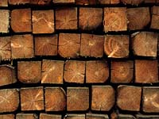
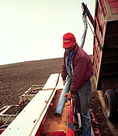

|
|

|
|
|
|
|
|
|
Plants are autotrophic organisms, forming the base of all food chains.
They are important not only for food but also in maintaining the oxygen levels
of our atmosphere as a byproduct of photosynthesis.
|
Plants provide all of our food through
the products they produce, either directly as plant products (as
in grains, fruits, and vegetables), or indirectly through animal
products (meat, milk, eggs).
|

Plants also contribute to our quality
of life through shaping our environment as natural vegetation or ornamental species, through making play areas more enjoyable (turf), and recreation activities (gardening).
|

Plants provide us with such things
as: food, fossil fuels, medicines, building shelters, fibres, beverages, perfumes, dyes, spices, soaps.
|
|
|
Crop plants are any plants grown for
economic reasons. This involves any part of a plant; seeds, roots and tubers, leaves, fruit, stems, and sap. Agriculture uses plants to produce food, fibre, or recreational opportunities.
|
The most important use of plants is for food. Over time, humans have selected a small number of plant groups to develop to satisfy our need for agricultural food production. Out of a possible
estimate of 300 000 plant species, approximately thirty of these
supply 95% of human plant nutrition, twenty of these species (grown
on approximately 75% of all the cultivated area of the world) supply
90%. Of the 20 species, eight are cereal grains, which belong to the grass family.
|
Crop Production Areas
The cropland of Saskatchewan has been divided into four areas based on climate, vegetation and soil type. The relative yields of crop varieties tend to vary from area to area.
Area 1: - Drought is a definite hazard.
- High winds are common.
- Sawfly outbreaks often occur.
- Cereal rust may be a problem in the southeastern section.
Area 2: - Drought and sawfly problems are common in the central and western section.
- Cereal rust may be a problem in the southeastern section.
Area 3: - Drought is not likely to be a problem, particularly in the east.
- Cereal rust may occur in the eastern area.
- The frost-free period can be fairly short in the northwestern and northeastern sections.
Area 4: - Rainfall is usually adequate for crop production.
- Early fall frosts and wert harvest weather are frequent problems.
|
|
|
|

In order to select a particular crop
and variety to grow, many factors must be considered. Selection is hardly a simple process, and involves experience, current information,
and maybe a bit of luck.
|
Plant types should be:
- suited to the
climate of a particular area,
- resistant to disease or plant pests
in the region,
- appropriate to the rotation sequence for the field,
- suitable to the producers needs, equipment, and time schedule,
- and matched to the market demand at the time (if
it is to be sold as a cash crop).
|
|

A general key to determine climate
suitability of certain crops and varieties is the days required
for a plant to mature or "Days To Maturity". The DTM
is the time interval between seeding and crop maturity (ready
to be swathed).
|
|
The average (and lowest) number of frost-free
days for a particular crop production area, along with knowledge
of the type of spring in a particular growing season are strong
indicators of the type of crops able to be grown. A wet, late,
and perhaps cool spring in areas would encourage
selection of varieties or crops which require fewer days to maturity
(maybe varieties of barley or Polish canola).
|
|
|
|
Expected yields are a concern to
any farmer. Producers must weigh a loss in yield against a gain
in quality, or hardiness (or vice versa) in order to get the
most benefit from their land. In order to accomplish this, producers must know the specific conditions of their growing
area, their market demands, and their own goals in order to make
appropriate decisions.
|
|
|
Time taken to analyse a particular situation
is time well spent for a producer, allowing him or her flexibility and
profitability; knowing is half the battle.
|
|
Horticulture (Hortus:garden) (Culture)
|
|

Horticulture is the art and science
of gardening. Horticulture involves research for crop development
and improvement. It includes production, processing, and distribution
of fruits and vegetables (50% of our diet) as well as plants in
landscaping and decoration.
|
|
|